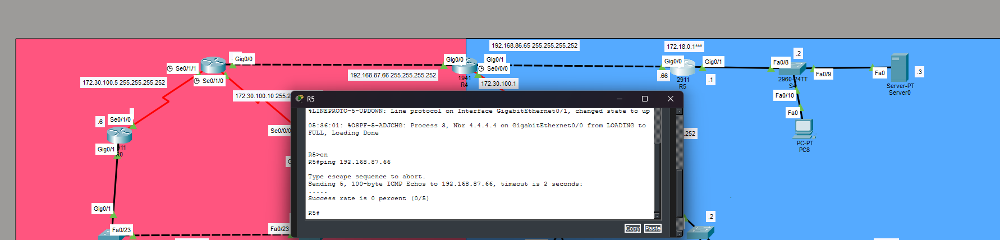
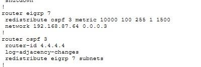

Challenge
Hosts in the EIGRP segment could not communicate with hosts in the OSPF segment.
Los hosts del segmento EIGRP no podían comunicarse con los del segmento OSPF.

Root cause
The border router running both EIGRP and OSPF (R4) did not have redistribution enabled, so neither domain learned the other's routes.
El router frontera con EIGRP y OSPF (R4) no tenía la redistribución habilitada, así que ningún dominio aprendía las rutas del otro.
Solution implemented
Mutual redistribution configured on R4:
Redistribución mutua configurada en R4:
R4(config)# router eigrp 7 R4(config-router)# redistribute ospf 3 metric 10000 100 255 1 1500 R4(config)# router ospf 3 R4(config-router)# redistribute eigrp 7 subnets

Highlights
EIGRP requires an explicit seed metric (bandwidth, delay, reliability, load, MTU) for redistributed routes. Specifying a metric when redistributing into OSPF is optional, since OSPF assigns a default cost of 20 to external routes. After the change, hosts in both domains ping each other successfully.
EIGRP necesita una métrica semilla explícita (ancho de banda, retardo, confiabilidad, carga, MTU) para las rutas redistribuidas. Al redistribuir hacia OSPF la métrica es opcional, porque OSPF asigna un costo por defecto de 20 a las rutas externas. Tras el cambio, los hosts de ambos dominios se hacen ping con éxito.